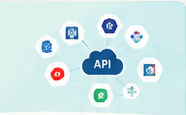
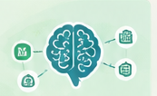

From shipped → sellable
10+ PMM enablement sessions and customer webinars on new integration and agentic capabilities, plus evangelism with India PM, SEA TAM and CSM teams.
Impact: helped close the gap between "shipped" and "field-ready".
I turn complex customer problems into enterprise products and AI-powered experiences — combining strategy, technology and a deep understanding of people.
Product is where I combine analytical thinking, creativity, technology and empathy.
I'm a Product Manager at Adobe focused on enterprise B2B SaaS, platform capabilities, content experiences, integrations and AI.
I've worked across strategy and execution — from shaping roadmaps for global enterprise customers to building AI systems that change how PMs work.
💃 Dance is my creative outlet.
🏃 Fitness keeps me grounded.
🌍 I've lived in Kuwait and India.
👩👦 Mom to a little adventurer.
Four stories showing how I think, build and drive outcomes across enterprise SaaS, platforms and AI.
Scaling AEM ↔ AJO integrations across content, adoption and enterprise revenue opportunities.

Turning one-off integrations into a reusable platform capability for enterprise content and data sources.
A full-stack AI system that connects fragmented PM workflows into one operating layer.

Creating a new enterprise motion for Adobe's Middle East region from the ground up.
A mix of product, technical and human skills, built for impact.
Deep empathy for users, customers and business outcomes.
Connects the dots between technology, market trends and business goals.
Comfortable with APIs, platforms, data and modern tech stacks.
Brings cross-functional teams together to turn ideas into products.
Explores and applies AI to solve real problems and improve workflows.
Curious, adaptable and excited about what's next.
Strong product work doesn't stop when the feature ships.
10+ PMM enablement sessions and customer webinars on new integration and agentic capabilities, plus evangelism with India PM, SEA TAM and CSM teams.
Impact: helped close the gap between "shipped" and "field-ready".
12 AEM ↔ AJO items shipped in H1, supported by adoption-funnel tracking and direct enterprise customer conversations.
Impact: featured in a company-wide AEM leadership announcement as PM lead.
From roadmap to recognition — scaling integration with adoption, not vanity metrics.
Deepen AEM's integration into AJO across fragmented use cases — Content Fragments, Dynamic Media and Content Advisor — while keeping adoption honest.
Owned the roadmap end-to-end, shipped 12 items in H1, built adoption-funnel tracking and used direct enterprise customer conversations to reprioritize what shipped next.
Featured in a company-wide AEM leadership announcement as PM lead. The integration now underpins a 1,000+ enterprise customer pipeline for upsell and cross-sell revenue.
Turning one-off integrations into a reusable platform capability.
Third-party providers exposed highly variable REST APIs, payload structures and content models. Bespoke integrations don't scale.
Create a reusable framework for configurable, productized integrations.
An AI productivity platform built from my own PM workflow.
PM work is fragmented across JIRA, Slack, market research and release communications — manually stitched together repeatedly.
Built PM Pulse as a full-stack Next.js 14 / React 18 AI application and expanded it to 25+ Claude-powered skills.
80% reduction in manual PM workflow effort, with the platform scaling toward wider PM adoption based on leadership feedback.
Building a new enterprise motion with no existing playbook.
Agentic AI Pods were brand-new for Adobe. There was no playbook for standing one up with an enterprise customer, let alone leading it regionally.
Established myself as SME and lead across the Middle East; recruited and staffed the first pod; solved an architectural constraint with engineering around Git-based change-management compatibility with live agent writes; and drove executive alignment and security review to kickoff.
Driving customer accounts representing $4M+ in near-term opportunity, within a regional customer base carrying $40M+ in overall ARR.
The work establishes a template for scaling Agentic AI Pods across the region.
I start with the customer workflow and decision being improved, then evaluate where prediction, generation, agents or automation create measurable value.
The principles behind how I make decisions and build products.
Start with the customer problem, not the feature.
Use evidence to improve decisions, not replace judgment.
Prefer reusable systems over one-off solutions.
Make assumptions explicit, test quickly and iterate.
Use AI to make workflows fundamentally better.
Look for the platform pattern behind the one-off request.